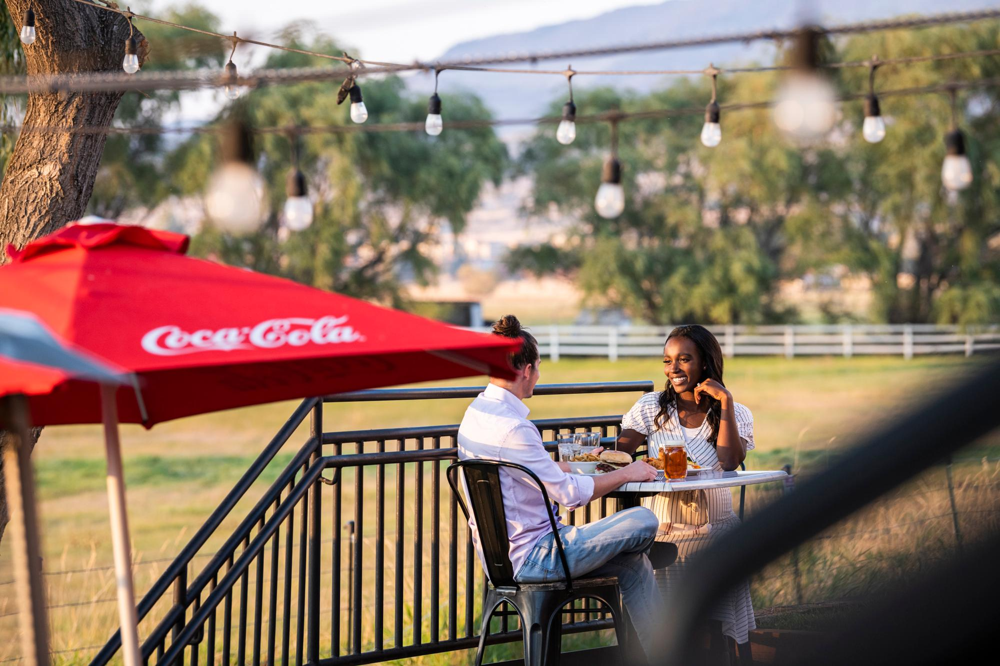
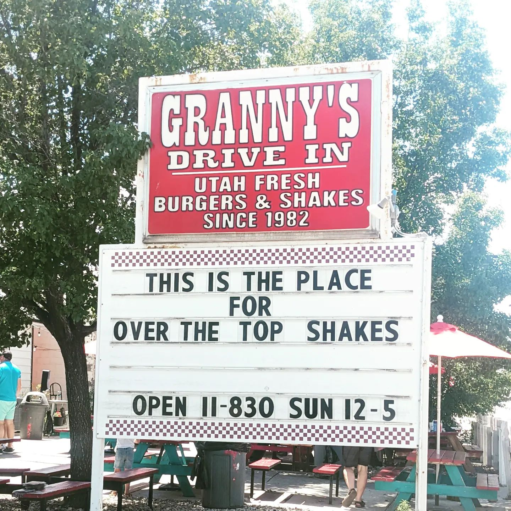
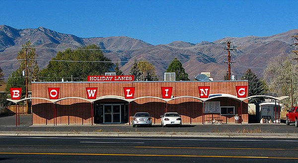

Fig.1 - Farm-to-table, family-friendly dining in Utah.
The local Back 40 Ranch House Grill provides food made with fresh, local ingredients from Heber Valley and the surrounding area. The yurt provides a cozy environment for winter dining and the spacious outdoor patio is a perfect setting for the summer season. Stunning views of the expansive acreage and Mount Timpanogos abound.
Granny's

Fig.1 - Shake and burger stop
Open for over 40 years, this local favorite is now a year-round restaurant serving up fresh burgers, fries, and shakes. You definitely need to try one of our famous over the top ice cream shakes!
Holiday Lanes

Fig.1 - Heber's bowling alley
Open since 1962 and run by the same family since 1964, the family-friendly bowling center features original ball returns and pin machines as well as the "Big Will," a cheesy never-frozen double beef burger named after owner Phyllis Christensen's father. Phyllis' classic malt is made with the same hand-mixing machines used in the 1960s.